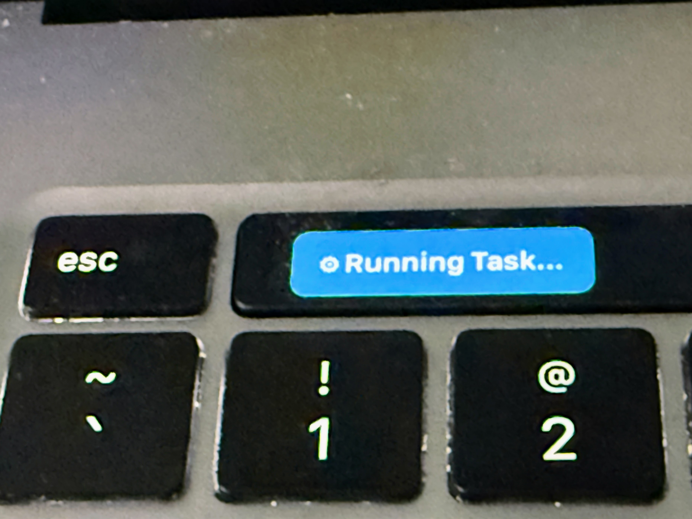
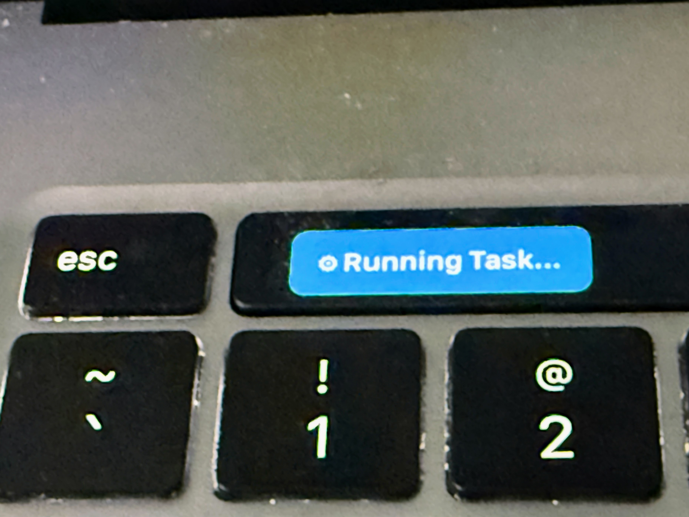
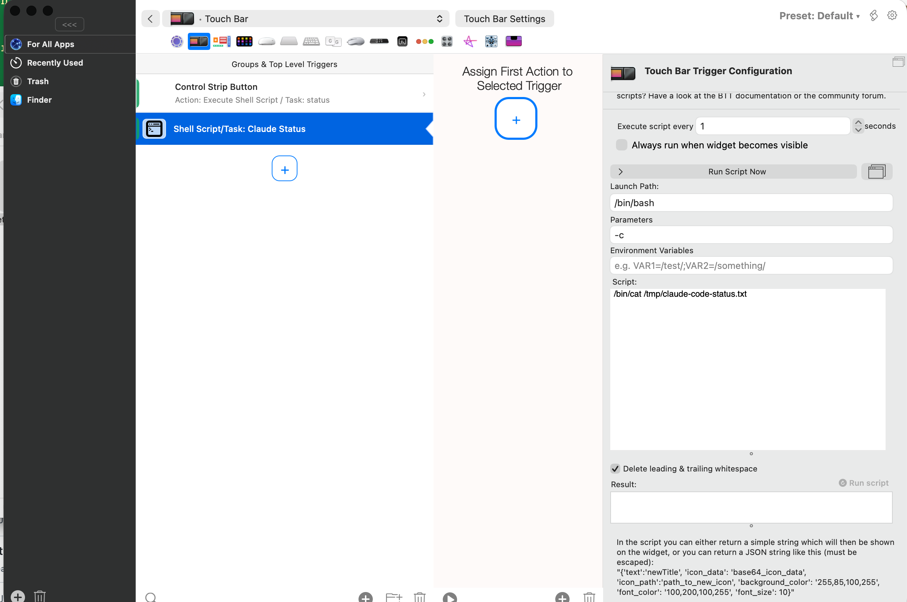

Using Claude Code to Update the MacBook Touch Bar Status
 

Transform your MacBook Pro Touch Bar into a beautiful, color-coded status display for Claude Code! This fantastic feature gives you instant visual feedback when Claude is working, waiting for input, or needs your attention - all with vibrant, eye-catching colors.
Overview
The MacBook Pro Touch Bar (2016-2020 models) becomes an incredibly useful productivity tool when paired with Claude Code. Using BetterTouchTool and a clever shell script, you'll enjoy dynamic, colorful status updates that let you know exactly what Claude is doing at a glance - no need to switch windows or check the terminal!

Beautiful Color-Coded Status Indicators
Each status has its own distinctive color, making it instantly recognizable:
| Status | Icon | Display Text | Background Color | When It Appears |
|---|---|---|---|---|
| Running Task | ⚙ | Running Task... | Blue | Claude is hard at work executing a tool |
| Waiting for Prompt | 💬 | Waiting for Prompt | Green | Claude is ready and waiting for your next brilliant idea |
| Task Complete | ✓ | Task Complete | Bright Green | Success! Claude finished a specific task |
| Question Waiting | ? | Question Waiting | Royal Blue | Claude has a question for you |
| Permission Needed | ⚠ | Permission Needed | Yellow | Claude needs your permission to proceed |
| Waiting for Input | ⏳ | Waiting for Input | Red | Claude is blocked and needs your response |
| Context Warning | ⚡ | Context Warning | Orange | Heads up! Context window is getting full |
The color scheme is thoughtfully designed: - Green = Ready/Success (go ahead!) - Blue = Working/Thinking (Claude is busy) - Yellow = Attention needed (permission request) - Red = Blocked (waiting for you) - Orange = Warning (context limit approaching)
Requirements
- MacBook Pro with Touch Bar (2016-2020 models)
- macOS 10.12.2 or later
- BetterTouchTool - The amazing Touch Bar customization app
- Claude Code CLI installed
Quick and Easy Installation
Step 1: Install BetterTouchTool
Getting started is a breeze with Homebrew:
brew install --cask bettertouchtool
After installation, open BetterTouchTool and grant the required accessibility permissions when prompted. You're almost there!
Step 2: Make the Notification Script Executable
chmod +x /path/to/moving-rainbow/src/macbook-status-bar/claude-notify-simple.sh
Step 3: Configure the Touch Bar Widget
Setting up BetterTouchTool is straightforward:
- Open BetterTouchTool
- Select Touch Bar in the dropdown at the top
- Click the + button to add a new trigger
- Select Shell Script / Task Widget
- Configure the widget with these settings:
| Setting | Value |
|---|---|
| Script | /bin/cat /tmp/claude-code-status.txt |
| Execute script every | 1 seconds |
| Launch Path | /bin/bash |
| Parameters | -c |
- Click Run Script Now to test - you should see a beautiful colored status appear!
You can also fine-tune your settings here:

Step 4: Configure Claude Code Hooks
Now for the magic! Add these hooks to your ~/.claude/settings.json file to automatically update the Touch Bar when Claude's state changes:
{
"hooks": {
"PreToolUse": [
{
"matcher": "",
"hooks": [
{
"type": "command",
"command": "/path/to/claude-notify-simple.sh running"
}
]
}
],
"Stop": [
{
"matcher": "",
"hooks": [
{
"type": "command",
"command": "/path/to/claude-notify-simple.sh prompt"
}
]
}
]
}
}
Replace /path/to/ with the actual path to your script (e.g., /Users/yourname/Documents/ws/moving-rainbow/src/macbook-status-bar/).
Important: After modifying settings.json, restart Claude Code for the hooks to take effect.
Step 5: Enjoy the Colorful Experience!
Test all the wonderful status colors:
# Beautiful blue - "Running Task..."
./src/macbook-status-bar/claude-notify-simple.sh running
# Lovely green - "Waiting for Prompt"
./src/macbook-status-bar/claude-notify-simple.sh prompt
# Bright green success - "Task Complete"
./src/macbook-status-bar/claude-notify-simple.sh flash
# Royal blue - "Question Waiting"
./src/macbook-status-bar/claude-notify-simple.sh question
# Attention-grabbing yellow - "Permission Needed"
./src/macbook-status-bar/claude-notify-simple.sh permission
# Urgent red - "Waiting for Input"
./src/macbook-status-bar/claude-notify-simple.sh waiting
# Warning orange - "Context Warning"
./src/macbook-status-bar/claude-notify-simple.sh context
# Clear the status
./src/macbook-status-bar/claude-notify-simple.sh off
How the Magic Works
The notification system uses a brilliantly simple file-based approach combined with Claude Code hooks:
graph TD
A[User sends prompt] --> B[Claude Code processes request]
B --> C{Tool use needed?}
C -->|Yes| D[PreToolUse Hook fires]
D --> E[Script writes JSON with BLUE status]
E --> F[BetterTouchTool reads file every 1 second]
F --> G[Touch Bar displays colorful status!]
C -->|No| H[Claude responds directly]
H --> I[Stop Hook fires]
I --> J[Script writes JSON with GREEN status]
J --> F
The Delightful Flow
- You submit a prompt to Claude Code
- Claude decides to use a tool (like Bash, Read, Write, etc.)
- PreToolUse hook fires → Touch Bar turns blue with "⚙ Running Task..."
- BetterTouchTool polls the file every second and displays the colorful content
- Claude finishes responding
- Stop hook fires → Touch Bar turns green with "💬 Waiting for Prompt"
- You smile knowing exactly when Claude is ready for your next input!
Understanding Claude Code Hooks
Claude Code hooks are powerful shell commands that execute automatically when specific events occur. They let you extend Claude Code's functionality in creative ways - like this gorgeous Touch Bar integration!
Hook Types Used in This Project
| Hook | When It Fires | Our Usage | Color |
|---|---|---|---|
PreToolUse |
Before Claude executes any tool | Show "Running Task..." | Blue |
Stop |
When Claude finishes responding | Show "Waiting for Prompt" | Green |
Hook Configuration Structure
{
"hooks": {
"HookName": [
{
"matcher": "",
"hooks": [
{
"type": "command",
"command": "/path/to/script.sh argument"
}
]
}
]
}
}
- HookName: The event that triggers the hook (e.g.,
PreToolUse,Stop) - matcher: Filter to match specific tools (empty string
""matches all) - type: Must be
"command"for shell commands - command: The full path to the script with any arguments
Available Hook Events
| Hook Event | Description |
|---|---|
PreToolUse |
Fires before any tool is executed |
PostToolUse |
Fires after a tool completes |
Stop |
Fires when Claude finishes a response |
UserPromptSubmit |
Fires when user submits a prompt |
Notification |
Fires for various notification events |
Using Matchers for Even More Control
The matcher field lets you create different colors for different tools:
{
"PreToolUse": [
{
"matcher": "Bash",
"hooks": [{ "type": "command", "command": "/path/to/script.sh bash-running" }]
},
{
"matcher": "Read",
"hooks": [{ "type": "command", "command": "/path/to/script.sh reading-file" }]
},
{
"matcher": "",
"hooks": [{ "type": "command", "command": "/path/to/script.sh running" }]
}
]
}
The Colorful Shell Script
The script outputs JSON that BetterTouchTool uses to create beautiful colored widgets. Here's how the color magic happens:
#!/bin/bash
#
# Claude Code Touch Bar Notification Script
# ==========================================
#
# This script writes JSON status to a temp file that BetterTouchTool
# reads and displays on the MacBook Pro Touch Bar with gorgeous colors!
#
# JSON Format for BetterTouchTool:
# {
# "text": "Display Text",
# "background_color": "R,G,B,A", (0-255 for each)
# "font_color": "R,G,B,A", (0-255 for each)
# "font_size": 12
# }
STATUS_FILE="/tmp/claude-code-status.txt"
FONT_SIZE=12
# Color Definitions (RGBA format)
WHITE="255,255,255,255"
BLACK="0,0,0,255"
GREEN_BG="34,139,34,255" # Forest green - ready states
BRIGHT_GREEN_BG="0,180,0,255" # Bright green - success
BLUE_BG="30,144,255,255" # Dodger blue - working states
ROYAL_BLUE_BG="65,105,225,255" # Royal blue - questions
YELLOW_BG="255,200,0,255" # Gold - permission needed
RED_BG="220,20,60,255" # Crimson - blocked states
ORANGE_BG="255,140,0,255" # Dark orange - warnings
case "$1" in
running)
# Blue background - Claude is working hard!
cat > "$STATUS_FILE" << EOF
{"text":"⚙ Running Task...","background_color":"${BLUE_BG}","font_color":"${WHITE}","font_size":${FONT_SIZE}}
EOF
;;
prompt)
# Green background - Ready for your next brilliant idea!
cat > "$STATUS_FILE" << EOF
{"text":"💬 Waiting for Prompt","background_color":"${GREEN_BG}","font_color":"${WHITE}","font_size":${FONT_SIZE}}
EOF
;;
flash)
# Bright green - Success!
cat > "$STATUS_FILE" << EOF
{"text":"✓ Task Complete","background_color":"${BRIGHT_GREEN_BG}","font_color":"${WHITE}","font_size":${FONT_SIZE}}
EOF
;;
question)
# Royal blue - Claude has a question
cat > "$STATUS_FILE" << EOF
{"text":"? Question Waiting","background_color":"${ROYAL_BLUE_BG}","font_color":"${WHITE}","font_size":${FONT_SIZE}}
EOF
;;
permission)
# Yellow with black text - High visibility warning
cat > "$STATUS_FILE" << EOF
{"text":"⚠ Permission Needed","background_color":"${YELLOW_BG}","font_color":"${BLACK}","font_size":${FONT_SIZE}}
EOF
;;
waiting)
# Red - Needs your attention now!
cat > "$STATUS_FILE" << EOF
{"text":"⏳ Waiting for Input","background_color":"${RED_BG}","font_color":"${WHITE}","font_size":${FONT_SIZE}}
EOF
;;
context)
# Orange - Warning about context
cat > "$STATUS_FILE" << EOF
{"text":"⚡ Context Warning","background_color":"${ORANGE_BG}","font_color":"${WHITE}","font_size":${FONT_SIZE}}
EOF
;;
esac
Adding Native macOS Notifications
Want even more notification goodness? The script supports native macOS notifications with delightful sound alerts. Just add the --notify flag:
./claude-notify-simple.sh flash --notify
This displays a macOS notification banner with sound in addition to updating the colorful Touch Bar!
Complete Example Configuration
Here's a complete ~/.claude/settings.json with Touch Bar hooks ready to go:
{
"hooks": {
"PreToolUse": [
{
"matcher": "",
"hooks": [
{
"type": "command",
"command": "/Users/dan/Documents/ws/moving-rainbow/src/macbook-status-bar/claude-notify-simple.sh running"
}
]
}
],
"Stop": [
{
"matcher": "",
"hooks": [
{
"type": "command",
"command": "/Users/dan/Documents/ws/moving-rainbow/src/macbook-status-bar/claude-notify-simple.sh prompt"
}
]
}
]
}
}
Troubleshooting
Touch Bar not updating
- Ensure BetterTouchTool is running
- Check Touch Bar Settings > Enable BetterTouchTool Touch Bar is checked
- Verify the script works:
cat /tmp/claude-code-status.txt - Click Run Script Now in BTT to test
Widget shows X icon
The script returned empty or failed. Test manually:
/bin/cat /tmp/claude-code-status.txt
If empty, run a notification command first:
./claude-notify-simple.sh running
Colors not showing
Make sure BetterTouchTool is configured to parse JSON output. The script outputs JSON in this format:
{"text":"💬 Waiting for Prompt","background_color":"34,139,34,255","font_color":"255,255,255,255","font_size":12}
Touch Bar not visible
Press the fn key to toggle between system Touch Bar and BetterTouchTool Touch Bar.
Hooks not working
- Verify
~/.claude/settings.jsonhas valid JSON syntax - Check the script path is absolute (starts with
/) - Ensure the script is executable:
chmod +x claude-notify-simple.sh - Restart Claude Code after modifying settings.json
Test hooks manually
# Watch the blue color appear!
/path/to/claude-notify-simple.sh running
sleep 2
# Now see it turn green!
/path/to/claude-notify-simple.sh prompt
Comparison with Pi 500+ Keyboard
This project also supports RGB LED notifications on the Raspberry Pi 500+ keyboard. Both are fantastic options - here's how they compare:
| Feature | Pi 500+ Keyboard | MacBook Touch Bar |
|---|---|---|
| Visual Indicator | Function key LEDs (F1-F3) | Touch Bar widget |
| Text Display | None (LED colors only) | Full text + emoji |
| Colors | HSV LED colors | Beautiful RGBA colors |
| Hardware | Raspberry Pi 500+ | MacBook Pro 2016-2020 |
| API | RPiKeyboardConfig | BetterTouchTool |
| Hook Integration | Same hooks system | Same hooks system |
| Color Customization | Via Python script | Via shell script JSON |
Both give you that wonderful "at a glance" awareness of what Claude is doing!
Source Files
The source code for this fantastic feature is located in:
src/macbook-status-bar/
├── README.md # Detailed documentation
├── claude-notify.py # Python script (advanced)
├── claude-notify-simple.sh # Shell script with colors (recommended)
├── btt-preset.json # BetterTouchTool preset
└── sample-hooks.json # Example Claude Code hooks
References
Enjoy your beautiful, colorful Touch Bar status display! It's like having a friendly traffic light that tells you exactly when Claude is ready for your next command.